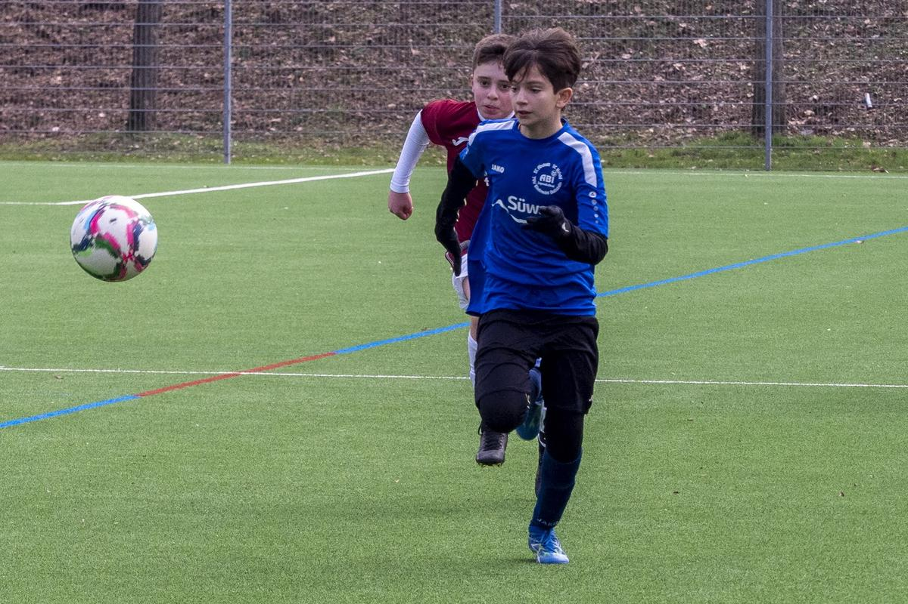
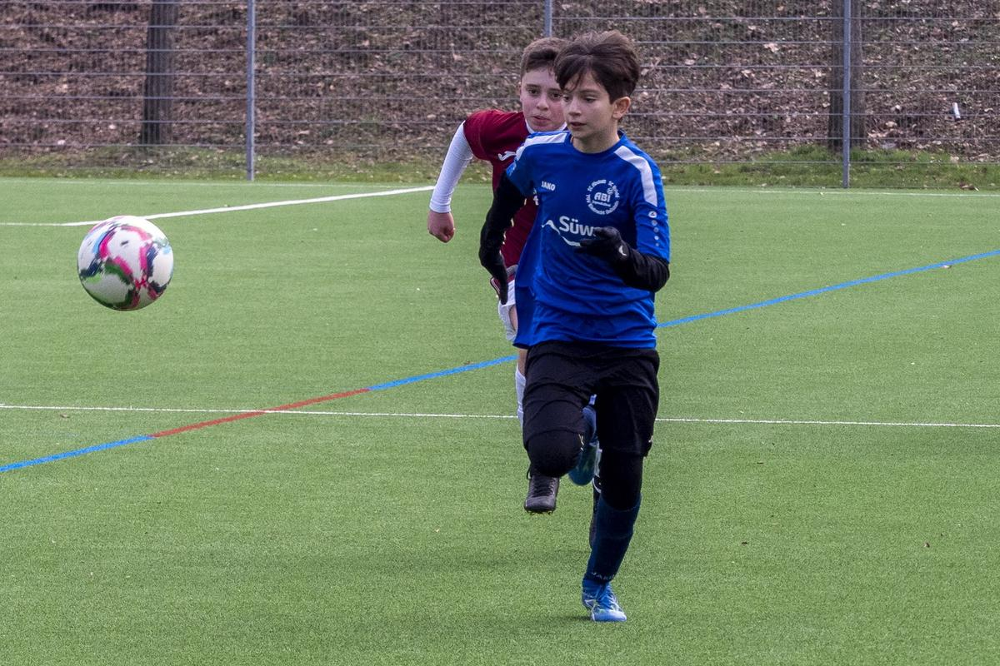

Trainingswochenende der C1
Vor Saisonstart verbrachten die ABI-C1-Junioren ein gemeinsames Trainingswochenende mit Übernachtung. Gleich zwei Testspiele gegen aktuelle Landesligisten standen dabei auf dem Programm. Für das neue Trainerteam Marco und Stefan war es die Möglichkeit, den Leistungsstand der Jungs zu testen und etwas am „Feintuning“ zu arbeiten. Am Samstag-Vormittag spielte die Mannschaft gegen die C1-Junioren des FV Löchgau. Da zwei krankheitsbedingte Ausfälle zu beklagen waren, halfen mit Uvejs, Mohammed und Paul drei Spieler der C2 aus. Das Spiel war schnell, laufintensiv und auf einem technisch guten Niveau. Am Ende konnte Löchgau das Spiel etwas glücklich mit 2:1 für sich entscheiden.
Nach den sicherlich ersten Grillwürsten bei Marco gab es am Nachmittag nochmals zwei Trainingseinheiten, bevor es dann in die Wildeckhalle zum Übernachten ging. Einen herzlichen Dank geht dabei an den Hausmeister Andreas Müller!
Obwohl die Jungs nach dem Training ausgepowert waren, reichte die Energie dennoch für eine recht kurz Nacht. Doch Ausschlafen war nicht möglich, denn bereits um 10.30 Uhr stand das Spiel gegen die Neckarsulmer Sportunion an. Zuvor bereiteten die Eltern ein nahrhaftes Frühstück zu, um wenigstens für genügend Energie trotz des Schlafdefizits zu sorgen.
Doch als es dann ernst wurde, war von Müdigkeit kaum etwas zu spüren. Die Jungs, diesmal ergänzt mit Robert und Dimi von den D1-Junioren, ließen Ball und Gegner laufen. Am Ende stand es 4:0 für das ABI-Team.
Nächste Woche geht es im Nachholspiel gegen den Tabellenführer aus Bühlerzell. Die Mannchaft ist gut gerüstet.
Dabei waren Jeremy – Noah B – Moritz – Nick – Finn – Noah S. – Lenny „Machiko“ – Jonah – Robin – Mika – Lenni D. – Samuel (erstmals bei der C1). Dazu am Samstag Uvejs – Mohammed – Paul. Am Sonntag Dimi – Robert.
M. Kimmig
 
